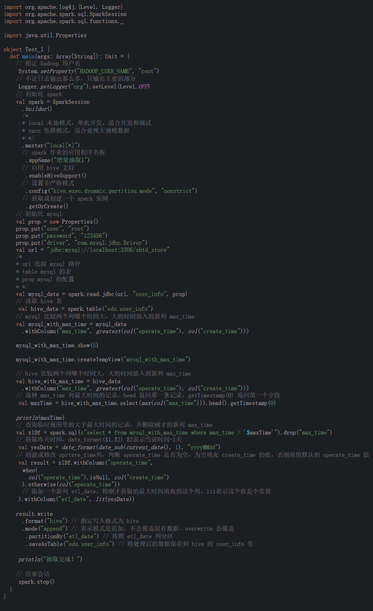
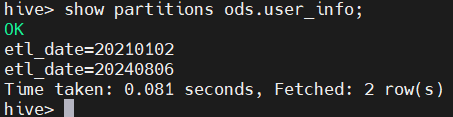
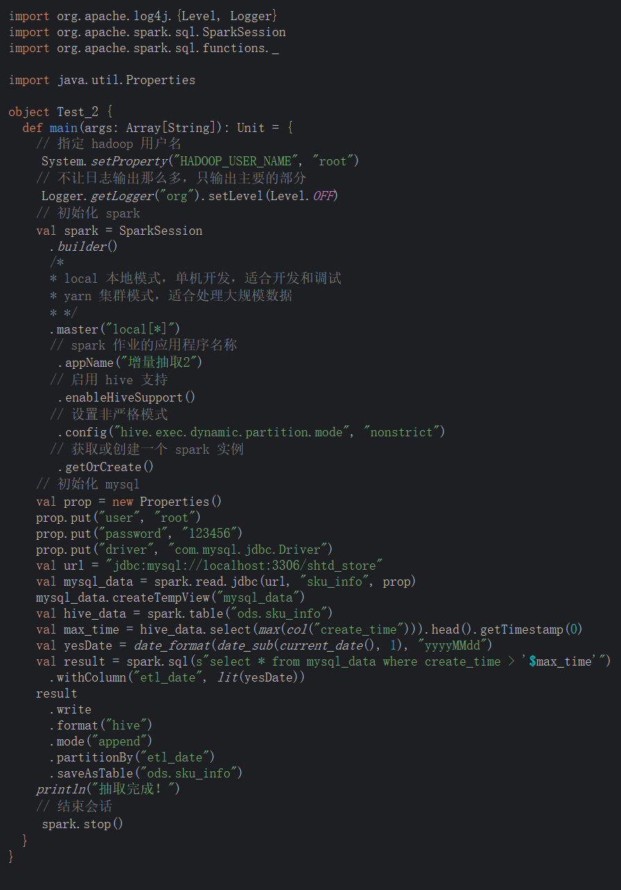
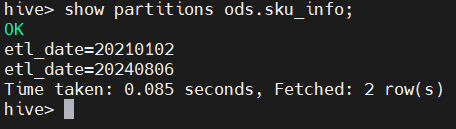

Spark 增量抽取 (Scala 实现)
题目
编写Scala代码，使用Spark将MySQL的shtd_store库中表user_info、sku_info、base_province、base_region、order_info、order_detail的数据增量抽取到Hive的ods库中对应表user_info、sku_info、base_province、base_region、order_info、order_detail中。(若ods库中部分表没有数据，正常抽取即可)
第一题
1、抽取shtd_store库中user_info的增量数据进入Hive的ods库中表user_info。根据ods.user_info表中operate_time或create_time作为增量字段(即MySQL中每条数据取这两个时间中较大的那个时间作为增量字段去和ods里的这两个字段中较大的时间进行比较)，只将新增的数据抽入，字段名称、类型不变，同时添加静态分区，分区字段为etl_date，类型为String，且值为当前比赛日的前一天日期（分区字段格式为yyyyMMdd）。使用hive cli执行show partitions ods.user_info命令。
代码


第二题
2、 抽取shtd_store库中sku_info的增量数据进入Hive的ods库中表sku_info。根据ods.sku_info表中create_time作为增量字段，只将新增的数据抽入，字段名称、类型不变，同时添加静态分区，分区字段为etl_date，类型为String，且值为当前比赛日的前一天日期（分区字段格式为yyyyMMdd）。使用hive cli执行show partitions ods.sku_info命令。
代码


本博客所有文章除特别声明外，均采用 CC BY-NC-SA 4.0 许可协议。转载请注明来源 FlyTeng！
 wechat
wechat alipay
alipay

评论